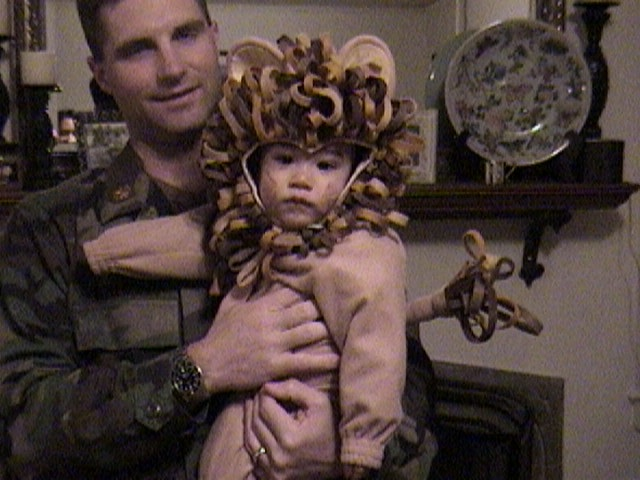

Jack P. Lonergan: From Start to Finish
The Start
Jack was born in San Antonio, TX to his loving parents on 13 February 2001. His father Keith, a military man, had the family move to West Point and eventually to Augusta, GA where they lived for 5 years. It was here also that Jack's brother Kyle and sister Chloe were born. It was Augusta that would be home to Jack's earliest memories and friends.

Greenville
In January of 2008 Jack's Father had left the military and they family was moving to Greenville, SC. It was the middle of his first grade year and he was leaving all of his friends behind never to see them again. It was a sad few weeks but it was also a brand new start for the boy.

Sports
As Jack grew up he was a JACK of all trades when it came to sports. From soccer to lacrosse to swimming to tennis to golf to baseball to basketball. Jack did them all. He was energetic and always full of energy. Eventually Jack began to devot his time to swimming, joning competitive teams for highschool and the YMCA.

High School
In his studies, Jack always pushed himself. From the momemnt he enrolled at St. Joseph's Catholic School, he strived to be great. Even as a dweeby little sixth grader, the boy always did his best in everything he did. Now, almost graduating highschool, Jack hasn't changed a bit in that regard. He's still giving it his all.